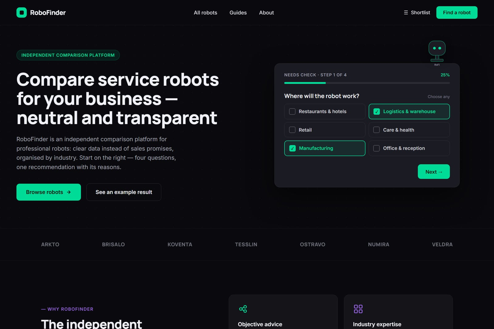
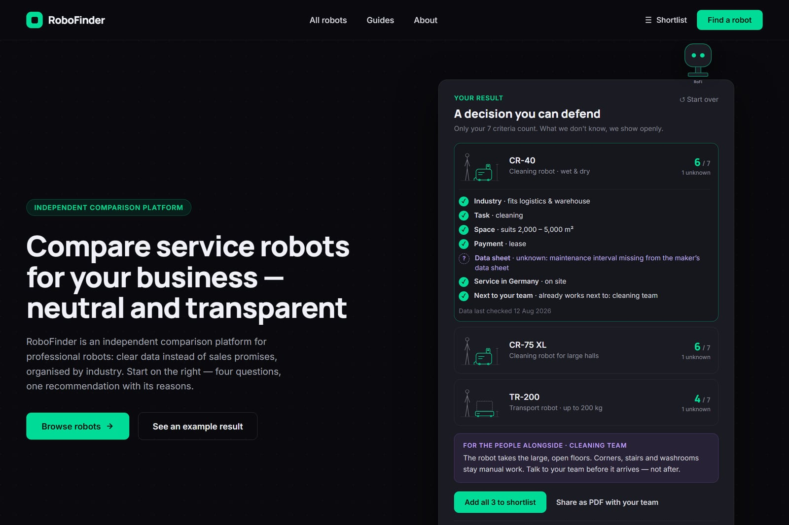
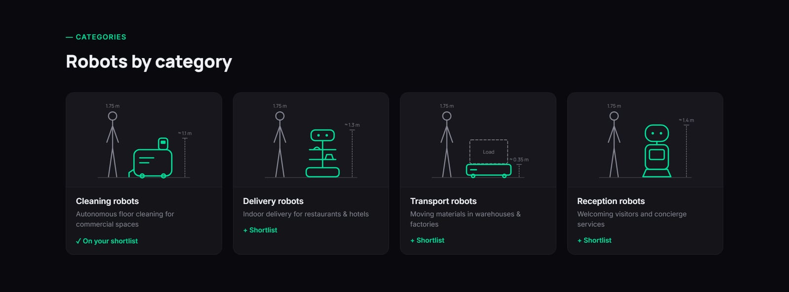

RoboFinder
Human-Centred AI · Interaction Design · Prototyping · 2026
RoboFinder explores how people can discover, navigate and compare robotic technologies through an AI-supported platform.
During my internship, I worked on selected parts of the application, translating project requirements into interaction concepts and interface prototypes. My work involved structuring information, developing interaction flows and exploring how AI-supported search and recommendations could make complex technical information more accessible.
The project reflects my approach to HCI: connecting problem framing, information architecture and interaction design to turn emerging technological possibilities into tangible user experiences.
Prototype developed as part of my internship at RoboFinder. Selected application components designed and prototyped during my internship at RoboFinder, based on project requirements. The prototype represents my design contributions rather than the complete platform.




